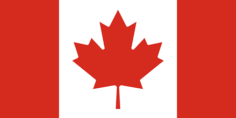

Curiosidades
- Capital: Ottawa
- Idiomas oficiais: inglês e francês
- Moeda: dólar canadense
- Sistema de governo: monarquia constitucional e democracia parlamentar
- Símbolos nacionais: folha de bordo e castor
- Clima: frio em boa parte do país, com invernos longos
- População: cerca de 40 milhões de habitantes, concentrados no sul
Informações
- Imigração: o país recebe muita gente de fora e valoriza a diversidade.
- Qualidade de vida: costuma aparecer bem em rankings de segurança, saúde e educação.
- Saúde pública: o atendimento básico é financiado pelo governo.
- Destinos que podem aparecer como prévia: Banff, Cataratas do Niágara e aurora boreal.